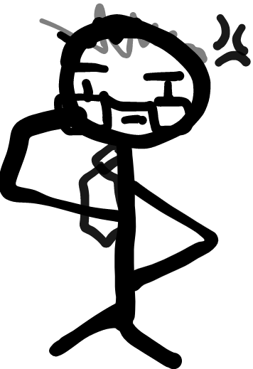
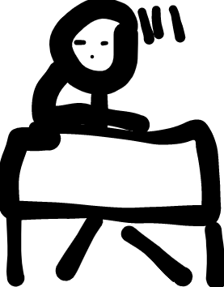
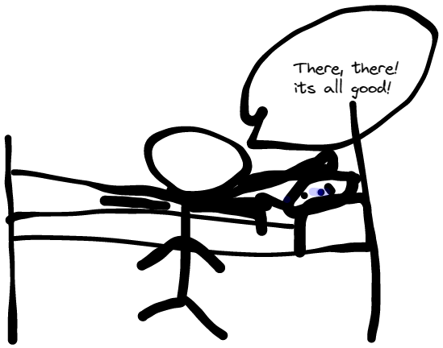
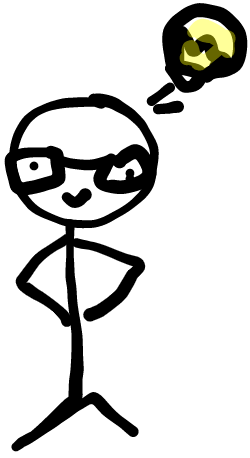
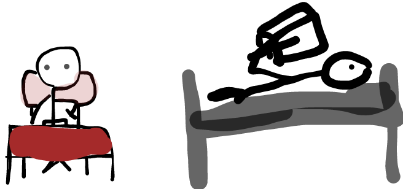
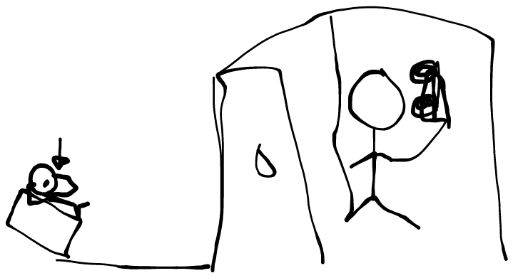
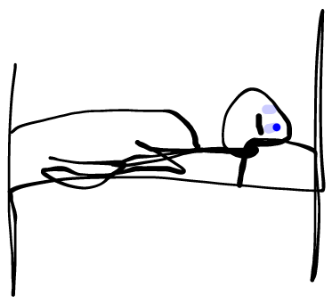
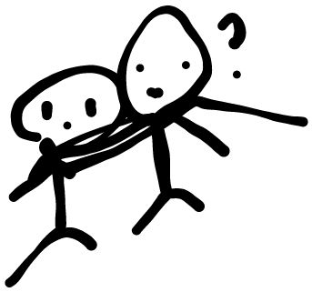
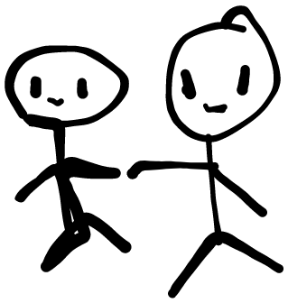
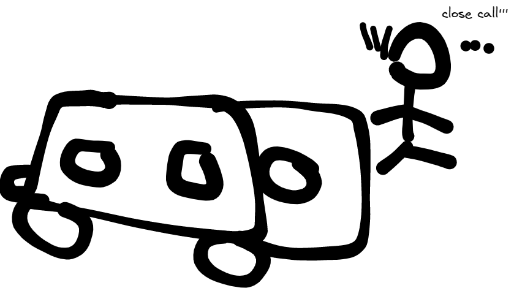

You finally graduated from high school, and after a long summer, it is time to go to college. It is the start of your own life!
You pack your things and go to your dorm room. You see your dorm mates. You decide to...

As you greet your roommates, they tell you some of the rules for living together. You are happy to meet new people, and feel a little less nervous.
You wake up in the morning refreshed and happy. Though a bit homesick, you decide to it is time to go to class.
You end up getting lost and didn't even manage to get to class. You end up getting very very sad. (-60) (-40)

You meet someone pretty cool, who guides you back to school.
Turns out he was the assistant of the professor whose class you missed.
Shocked at the coincidence, the person filled you in on everything in the class you missed, and told you he would explain it to the professor
Happy Ending
Ending: You make friends with the teaching assistant, and when you got back to the dorm, you were very happy.
You felt less lonely and more comfort knowing there is someone for you.

Advice:Campuses can be large, but unless you are directionally challenged ad are super unlucky, this should not happen.
Try to talk to your roommates to get to know them if you feel like it, and connect with people you feel a bond to, like the teaching assistant.
Try to train your mental health and physical health so you get sad less easily. You should also reach out to people for help if needed, or go to the police station/working staff for help if lost...
You decide to go with your new roommates, but they are asleep, so as you wait for them to wake up, you end up running low on time.
You walk with you roommates, but the professor wasn't too happy about it.
But as it was the first day, he let it go!

You finish class well, but the professor then has a talk with you and your roommates for an hour or so after and then you decide to explore the shops with your roommate. Turns out your roommate had a job, and you decided to apply a position there too.
Happy Ending
Ending: Life's ok! You have gotten closer to one of your roommates and now have some mental support.
You meet new people and genuinely feel happy! You get some free food and exercise, Nice!

Advice: Please always do arrive on time, in class, if not, then it's fine. Scheduling and planning is important.
Please balance your time well, talk to a counselor and try to manage your mental health well.
You make it on class on time, panting and you take a seat. The lecture seems a bit boring and you start feeling drowsy.
You listen in class despite your tiredness (-20) You then decide to

You play alone and feel sad (-20)

Today was a tiring day, and you are homesick. You couldn't muster the courage to call your parents, only to find out you were not doing that well.

Happy? Ending
Ending: You end up crying in the dorm, and later you heard a slight click at the door.
You close your eyes, not wanting your dormmates to find out your sadness.
You feel someone slowly stroking your head, and helping you cover the blankets.
And you slowly fall asleep!

Advice: Playing alone is ok, but pay attention to saftey!
Always take care and take notice of your own emotions, as you do not want to eventually be numb of emotions or go crazy.
Find something in common with your dormmates, classmates or even the people around you!
Findng support and friends can help stabilize your mental state.
You study with your dormmates (+20) (+20) You feel smarter, but your dormmates are now all busy, now you decide to ...

You then wander the campus, and you see people.
You join the group of people, to only find they were doing something suspiscous. Scared, you run and run!

Normal Ending
Ending: You trip and hit the asphalt. Luckily there were no injuries.
Turns out, they were just doing club activities!

Advice: Please exercise more! And exercise caution more! Next time if someone chases after you and you are alone, you will be dead meat! Your physical Health is very important! It might also be fun joining the club activities though.
You eat alone and you decide to run, your mental health feels better, and your stamina seems better (+20) (+20) You decide to go home now
Today was a tiring but a happy day! You feel your smile on your mouth all the way till you go home. Luckily the campus was safe, so you could go home alone at ease...
Happy Ending!!!
Ending: You are happier, though next time please pay attention to saftey!

Advice: Keep up the good work in exercising, don't you want cool abs, or a curvy physique, or maybe you want to be a hero rescuing a damsel in distress in the future
Try to make friends other than your dormmates, and keep active.
A healthy physical conditions does wonders on your mental condition
You offend the professor as you completely fall off the table. You end up having to leave the room. (-20) (-20)

Although you offended the professor and was separated form your dormmates, you know tommorow will be a better day

Normal Ending
Ending: Your studies are very important, next time please try not to does off in class
Hint: You can try to schedule your classes and everything, and think ahead of time. Please try to communicate ahead of time, as to make sure everything goes well. Although it may not have ended well this time, the people are still there, and you still have time to make amends with the professor.

Your mental health and physical health are influenced by the amount of time you have and although flexibility is good, you need to see what is important to you.
Your roommates seem busy still so..

You try to interupt your roommate but fail. You hear loud phone call in the middle of the night, you decide to..

You quietly get out off your bed to tell the person off, but as you approach the restroom door of where the phone call is being made.
You hear a loud and upset yell. "Why can't you be happy for me?" You heard, seeing as it sounded personal, you didn't wanted to be caught eavsdropping

You ended up feeling bad and pretending to sleep!

You ended up falling asleep for real. You wake up and your roomates are gone. You do feel a bit tired for sleeping late though (-20)
Class was now over. But there's a gathering after class, you decide to
Normal ending
Ending: You stay home like the introvert you are. You end up making friends with your introvert roommate. Though your other roommate never came back.

Advice: Your mental health is important so visit therapist if needed or use AI to help if you are shy, no one would know...
It would be good to manage your time, but you do not seem to need it now, as you are not busy.
It is good to have a hobby or part-time job that will allow you to exercise as to not deterioriate your muscles that you might have gotten in high school.
Also if you exercise , you can be like one of those super cool martial artists or super herose you dreamed off.
Go Rock Your Life Like it is Nobody's Business!
You went to the class gathering, you see your dormmate in the restroom crying... You decide to...

You talk to other people, and decide to gove your dormmate space.
When you go back to the dorm, you realize your dormmate hasn't come back.
Later next morning, you found out your roommate had completely dropped out off school.
No one knows where they are now...

Normal Ending
Ending: Regular College Life! You go to class as always, but sometimes you can't help thinking about that roommate, until one day you see them working as a bartender.
You greet them, and they just acted like they didn't know you. I guess life turns out unexpectedly.
Advice: Sometimes it may be better to give someone space, but it's always ok to ask if someone needs help.
If your mental heath is fine, then work on your physical health through exercising. I heard it does wonders on beauty especially your face and those muscles.
Your physical health will improve if you exercise, and your immune system will too I heard.
You talk to your dormmate and try to cheer them up as they are crying heavily.
Turns out your roommmate broke up with his lover that day, and when he called his parents they were upset about his art major...
You ended up carrying your drunken roommate home.

Happy Ending
Ending: You end up being very good friends with your dormmate.
With your help, your dormmate no longer had suicidal thoughts, and under your advice, he started going to therpay and counseling.
But they were not willing to go without you. The issue now is, your dormmate seems to have a fever when they see you...

Advice: You did well, mental health is important and giving support to your friend is a good idea.
It might make you feel like you are needed, but most importantly your friend feels heard and needed, and was given a huge step forward is their life.
Maybe this connection may be the connection you needed. Not to mention, this friend will probbaly also reciprocate such feelings if you are down.
Note: The ambiguous ending doesn't apply for real life, not always that is...
You wake up with a headache, because last night you did not communicate with your roommates, they ended up setting alarm clocks that woke you up.
One of them alo had a phone call late at night (-40) (-40)

You go to class with a headache, and nearly got ran over with a bus. (-20) (-40)

Bad Ending/Bad beginning of your life
Ending: Life was Tough! You ended up talking to your roommates about it and problem was solved. The next day you talked to the proffessor and checked to see if you missed anything.